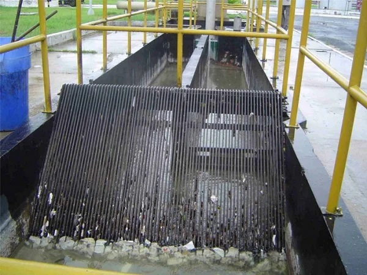
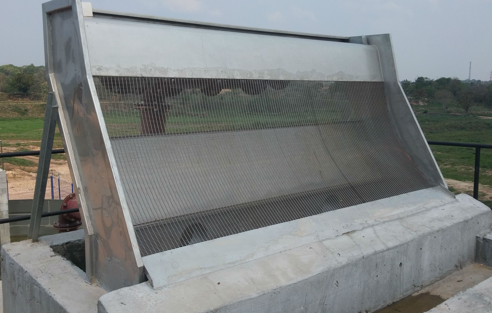

O QUE É?
O processo de tratamento geralmente envolve várias etapas para remover contaminantes e impurezas. Duas das primeiras etapas comuns são o gradeamento e a peneiração, que são métodos mecânicos de remoção de sólidos grosseiros e materiais indesejados do efluente bruto. Vou explicar cada um deles:
GRADEAMENTO
O gradeamento é geralmente a primeira etapa de remoção de sólidos em uma estação de tratamento de efluentes.
Consiste em passar o efluente bruto através de grades ou barras paralelas colocadas em um ângulo inclinado.
O objetivo é reter sólidos grosseiros, como pedaços de madeira, plástico, papel, latas e outros detritos grandes que podem estar presentes no efluente.
Esses sólidos retidos são então removidos mecanicamente e descartados adequadamente.
O gradeamento é importante porque ajuda a proteger equipamentos e processos subsequentes de danos causados por objetos grandes e materiais indesejados.

PENEIRAÇÃO
A peneiração é uma etapa semelhante ao gradeamento, mas envolve o uso de peneiras ou telas com aberturas menores do que as usadas no gradeamento.
Enquanto o gradeamento retém apenas os sólidos grosseiros, a peneiração é capaz de capturar sólidos de tamanho menor, como cabelos, fibras, areia, e outros materiais de tamanho intermediário.
A água passa através das aberturas da tela, enquanto os sólidos são retidos.
Esses sólidos retidos são então removidos e descartados da mesma forma que no gradeamento.
A peneiração é importante para proteger equipamentos mais sensíveis e processos subsequentes, garantindo que o efluente esteja relativamente limpo antes de avançar para as próximas etapas do tratamento.

Ambos, gradeamento e peneiração, desempenham um papel crucial na remoção de sólidos grosseiros e materiais indesejados do efluente bruto, preparando-o para tratamentos posteriores mais intensivos, como a sedimentação, a filtração e a desinfecção. Essas etapas subsequentes visam remover contaminantes adicionais e tornar o efluente seguro para descarte ou reutilização, conforme os padrões ambientais e regulamentares.